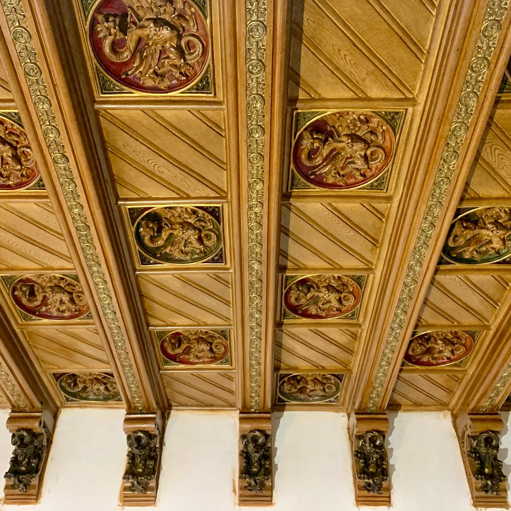
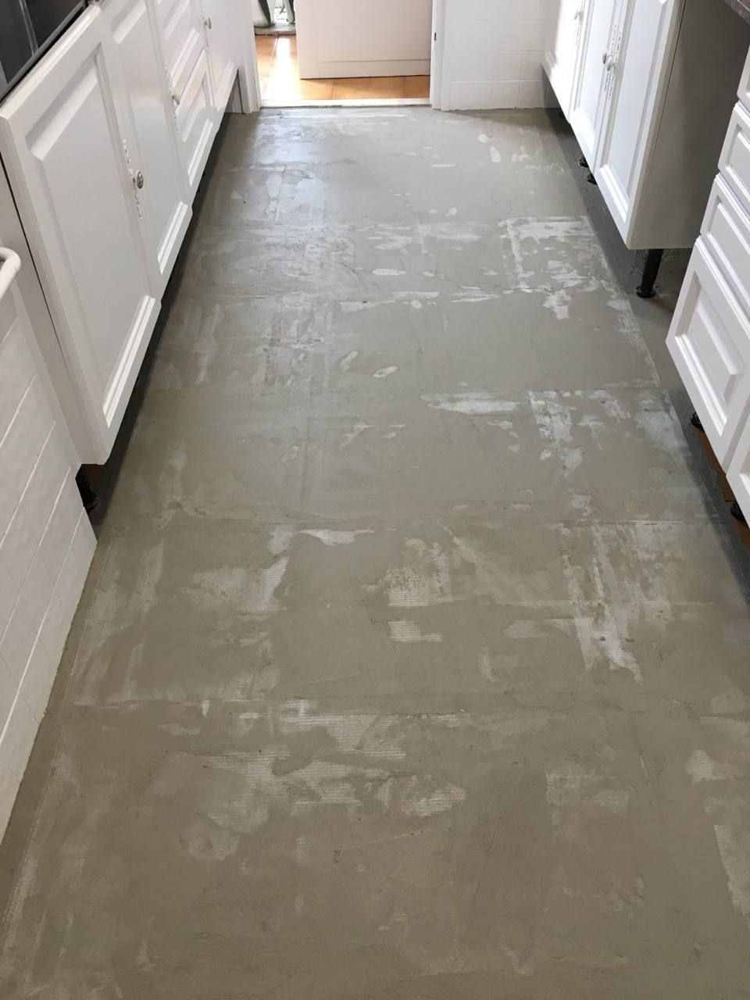
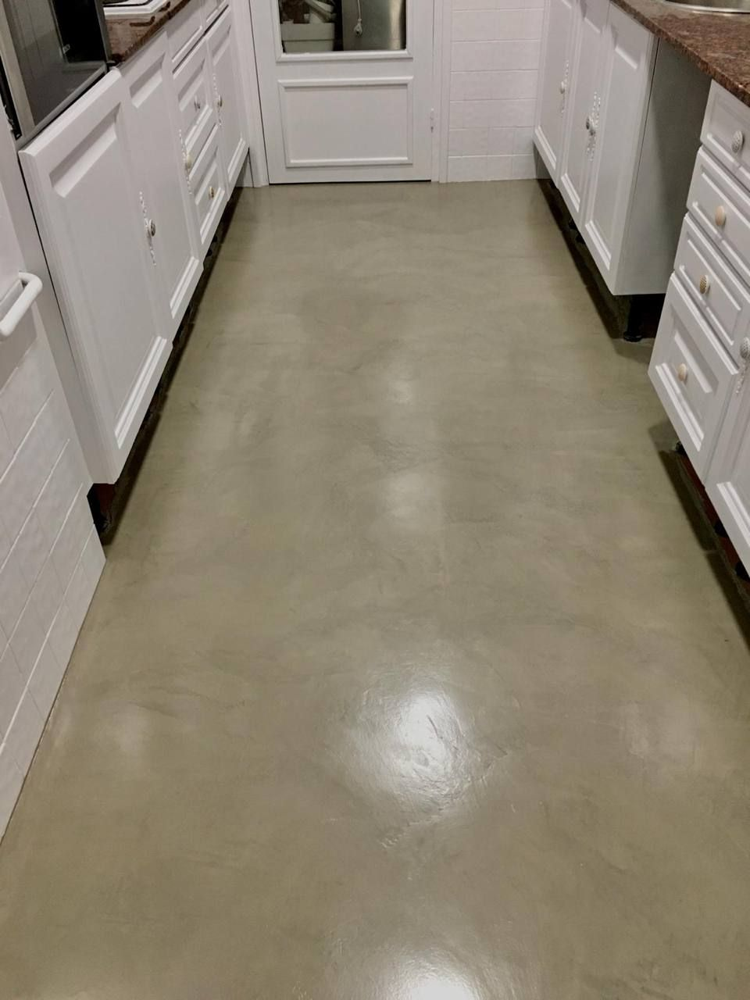
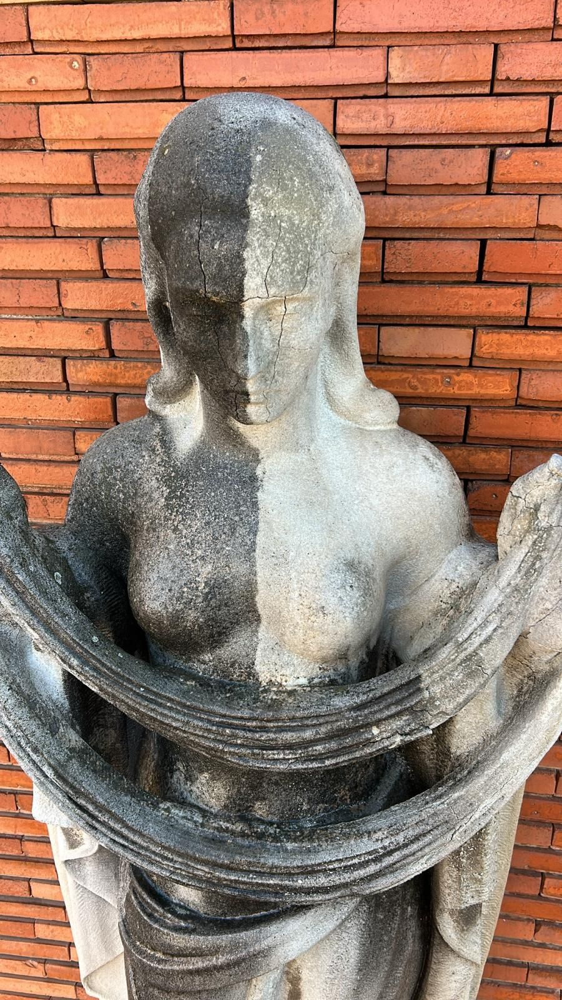
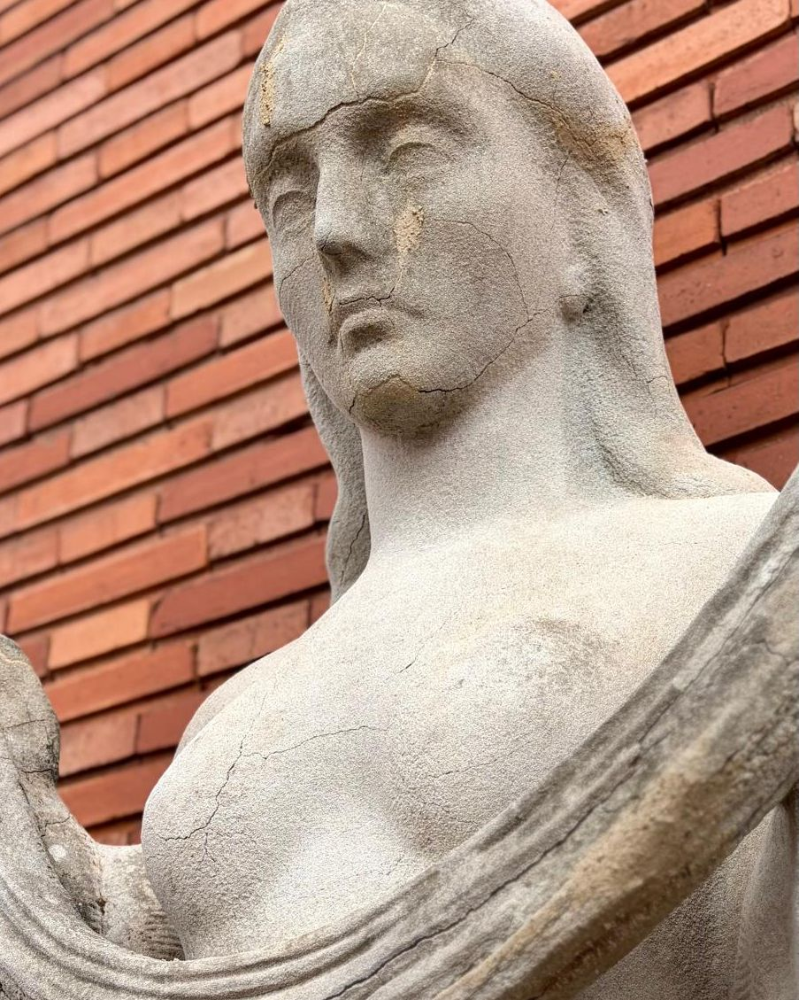
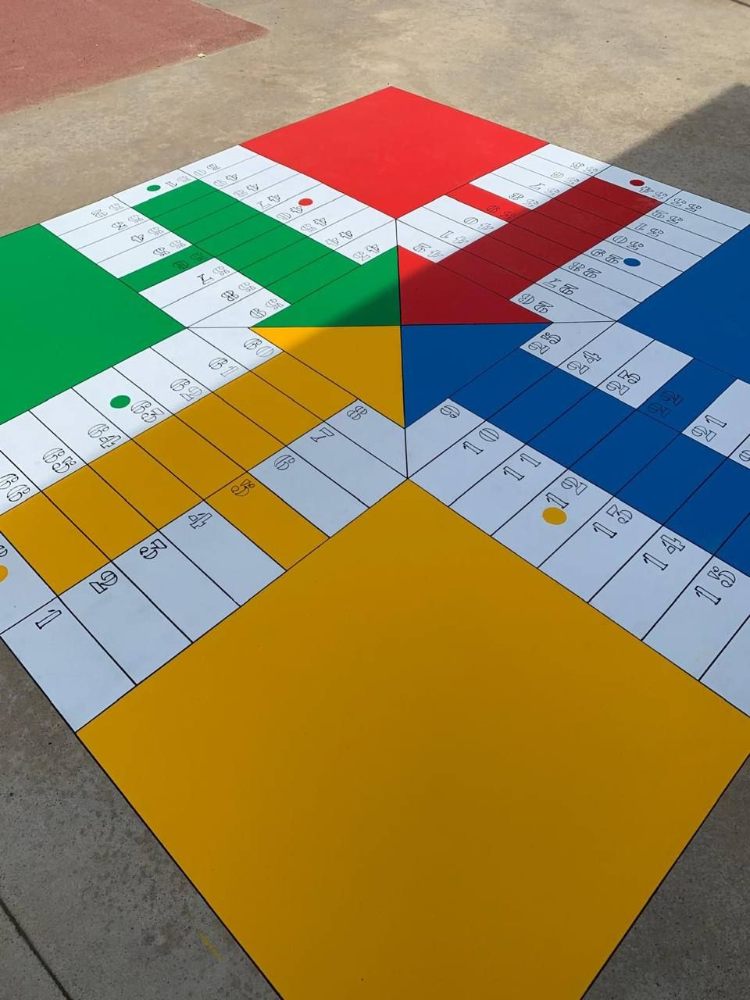
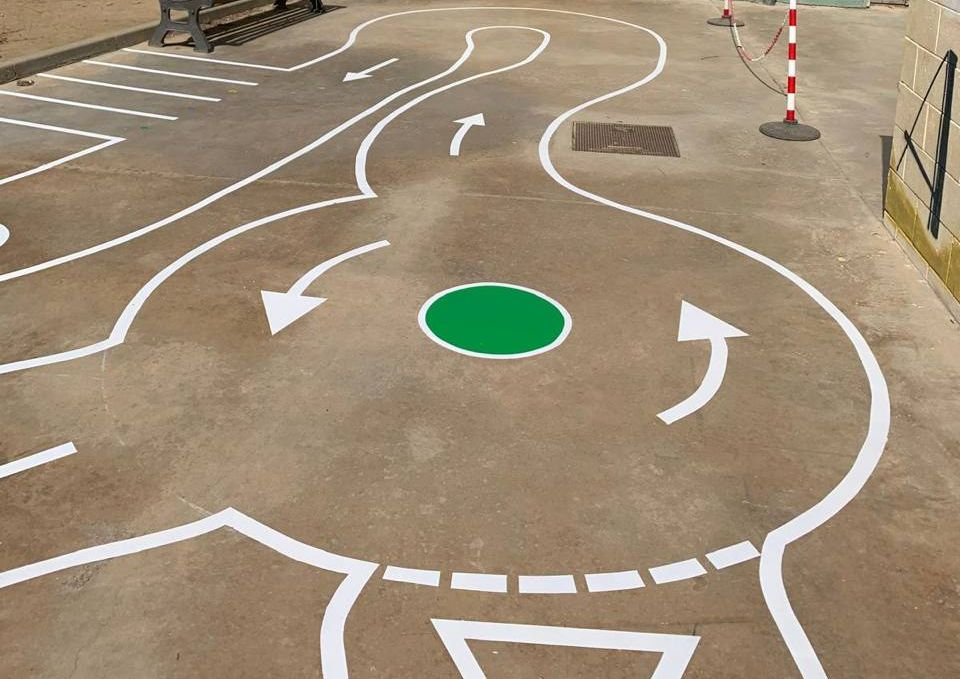

Els treballs fins que marquen la diferència
Som una empresa de pintura i impermeabilització amb mà per al detall: microciment, estucs i pintura decorativa, esgrafiats, daurats, imitació de pedra i jocs pintats a patis d’escola. Formació en Arts Aplicades al Mur i més de 21 anys en acabats.

Tres clients, la mateixa exigència
- Reformistes i interioristes
- La part de pintura i acabats de la teva reforma, amb el calendari de la teva obra: parets i sostres, microciment, estucs, un mural o una paret protagonista.
- Particulars
- Un bany o un terra de microciment, una entrada amb imitació de marbre, una tarima exterior que s’ha tornat grisa.
- Arquitectes, comunitats i entitats
- Treballs d’acabat i pintura en edificis històrics: esgrafiats, daurats, pedra. En els edificis protegits treballem al costat de la direcció facultativa i del restaurador responsable.
Set especialitats d’acabat
Cada tècnica té els seus materials i la seva manera de fer-se. Les expliquem una per una.
Microciment
Terres, banys i parets continus, sense juntes, sovint sobre la rajola existent.
Estucs i pintura decorativa
Estucs, falsos marbres, murals i parets que es recorden, a cases, botigues i restaurants.
Esgrafiats i pintura mural
Morters de calç gravats, sòcols pintats i decoració mural.
Daurats i sostres decorats
Motllures, enteixinats, mènsules i daurat amb pa d’or.
Imitació de pedra
Elements nous que es llegeixen com la pedra original, i detalls de pedra.
Restauració i conservació de patrimoni històric i artístic
Façanes i interiors antics amb silicats Keim i morters de calç.
Tarima i fusta exterior
Netejar, polir i protegir la fusta que el sol ha tornat grisa.


Un passadís, d’obra a acabat continu
El formigó reparat i a la vista abans de l’acabat i, al costat, el paviment continu gris acabat.
La pedra, de prop
A l’esquerra, una cata de neteja: a la mateixa peça, la pedra ja neta al costat de la crosta que encara no s’ha tractat. És la prova que es fa abans de decidir el mètode amb qui dirigeix l’obra.


Jocs pintats al terra del pati
Un pati de formigó gris es converteix en un tauler, un circuit o una xarranca. Pintem jocs al terra de patis d’escoles: caselles de colors, recorreguts amb fletxes, zones de joc marcades.
Fem servir pintura per a terres pensada per a exterior i per al pas diari, i el disseny s’adapta a l’espai i al que vulgui treballar el centre.


Obres en què hem treballat
El nostre equip ha participat en els treballs d’acabat i pintura d’aquests edificis. Hi posem només el que vam fer, amb l’any. En els edificis protegits, el criteri el fixen la direcció facultativa i el restaurador responsable; nosaltres executem els acabats.
- 2025
Catedral del Sant EsperitTerrassa
Treballs durant l’obra a l’interior de la catedral.
- 2014
Façana a la Rambla de CatalunyaBarcelona
Remunta de l’edifici: imitació de pedra de Montjuïc als elements nous, perquè fossin iguals que els originals.
- 2010
Teatre PrincipalTerrassa
Rehabilitación integral del teatro, reabierto en 2011.
- c. 2009
Reial Cercle ArtísticBarcelona
Tots els interiors de la primera planta, convertida en el restaurant El Cercle.
- 2008
Fonda EspanyaBarcelona
Treballs a tots els interiors, els esgrafiats, les escales principals i el celobert.
Les dades que et demanaran
Si ens has d’incloure en una proposta o un expedient, aquí tens les dades de l’empresa. I al dossier, la formació, els serveis i les obres.
- Nom comercial
- Lamper Soluciones de Acabado
- Raó social
- Lamper Instalaciones y Mantenimiento SL
- NIF
- B75522136
- Registre
- Registre Mercantil de Barcelona, tom 100043780
- Domicili
- Carrer de Núria, 97, local · 08224 Terrassa (Barcelona)
- Contacte
- info@lamper.es · 680 42 72 61
El que ens solen preguntar
Sou restauradors?
No. Som una empresa de pintura i impermeabilització amb formació en Arts Aplicades al Mur i anys d’ofici en edificis històrics. En obres d’edificis protegits, la intervenció la signa un restaurador titulat o la direcció facultativa, i nosaltres executem els treballs d’acabat i pintura amb ells.
Treballeu amb reformistes?
Sí. Ens encarreguem de la part de pintura i acabats de la reforma, amb el calendari de la teva obra.
Per què no pintar una paret antiga amb pintura plàstica?
Perquè forma una pel·lícula que deixa passar molt pitjor el vapor d’aigua que la calç o el silicat. En murs antics treballem amb calç o amb silicats Keim, que deixen respirar el mur.
Treballeu fora de Terrassa?
Sí. Som a Terrassa i treballem a Sabadell, el Vallès, Barcelona i la resta de Catalunya.
Quin acabat tens al cap?
Envia’ns fotos de l’espai, unes mides aproximades i una idea del que busques.